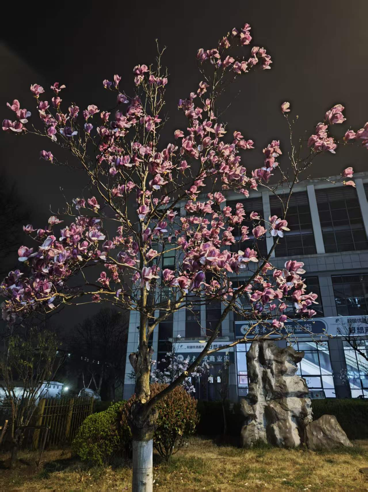
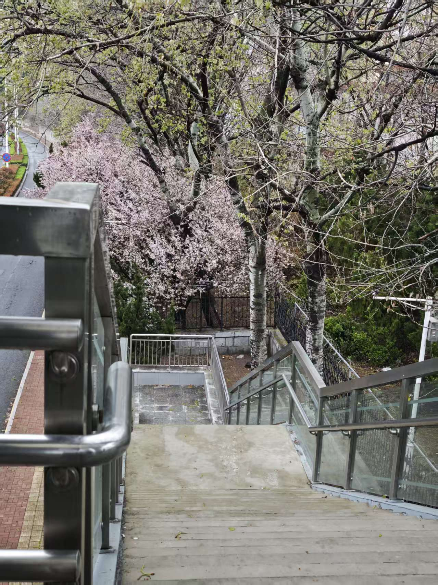

春日的鲁东大学，是被鲜花唤醒的校园。当第一缕春风拂过，图书馆前的玉兰花便率先绽放，洁白的花瓣缀满枝头，像一只只振翅欲飞的白鸽，在澄澈的蓝天映衬下，透着干净纯粹的温柔。沿着林荫道往前走，道路两旁的紫叶李开得热烈，粉白色的花瓣如云似霞，风一吹便下起浪漫的花雨， 落在行人的肩头、发梢，把整个校园都晕染成了温柔的粉色。逸夫楼前的海棠花更是春日里的主角，粉白相间的花朵层层叠叠，满树繁花似锦，引得无数师生驻足拍照，定格下校园里最美的春日瞬间。 操场边的迎春花开得灿烂，像是一串串金色的小铃铛，为清新的春日添了几分活泼；樱花树在春风中舒展身姿，粉白的花瓣随风轻舞，走在树下，仿佛置身于童话般的花境。这些春日的花朵，不仅装点了校园的风景，更陪伴着鲁大学子的日常，让每一个清晨与黄昏，都充满了花香与诗意。
漫步在鲁东大学的校园里，每一处角落都藏着春日的惊喜。教学楼旁的连翘抽出金黄的花穗，在阳光下闪耀着温暖的光芒；宿舍楼下的樱花树连成一片花廊，粉白的花海延伸向远方，成为校园里最浪漫的打卡点；湖边的垂柳抽出嫩绿的新芽，柔软的枝条随风轻摆，倒映在波光粼粼的湖面上， 与岸边盛放的迎春花相映成趣，构成了校园里最灵动的春日景致。不同的花色、不同的花期，让整个校园从早春到暮春，始终被花香与生机包裹。同学们在花树下晨读，琅琅书声伴着花香；在花道上漫步，欢声笑语在花海间回荡；在花旁拍照，定格下青春与春光的美好瞬间。这些盛开的春花， 不仅是自然的馈赠，更是鲁大校园文化中最鲜活、最动人的一部分，让每一个身处其中的人，都能感受到春日的美好与青春的力量，把校园的春日记忆，刻进青春的年轮里。

